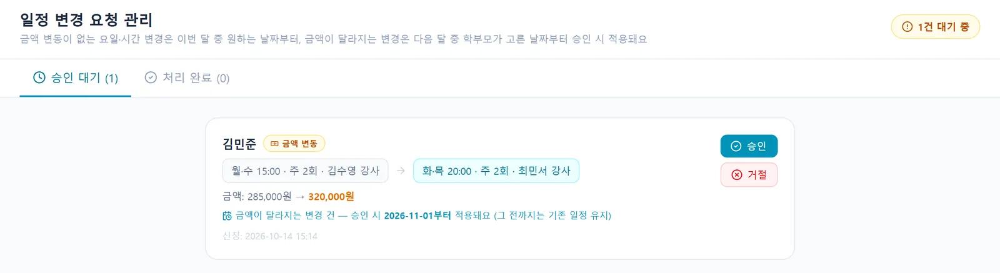

현장에서 들은 이야기
이런 불편, 겪고 계시죠
반변경또는 수정등.
수영 강사 · 광주 · 설문 응답보강 및 스케쥴 변경, 관리 등이 아날로그 식으로 진행되고 해서 불편했어요.
수영 강사 · 서울 강남구 · 설문 응답이렇게 사용해요
네 단계면 끝나요
- 학부모 변경 신청
학부모 앱 '내 수업 정보'에서 원하는 요일·시간과 적용 날짜를 골라요.
- 전·후 비교
데스크는 변경 전·후 요일, 시간, 수강권과 금액 변동을 한눈에 비교해요.
- 승인
승인 한 번으로 학생의 반 정보가 바뀌어요.
- 적용일부터 자동 반영
스케줄표, 강사 명단, 차량 명단, 다음 달 원비가 함께 바뀌어요.
금액이 바뀌는지 자동으로 알려 줘요
같은 금액의 요일·시간 변경은 이번 달 고른 날짜부터, 금액이 달라지는 변경은 다음 달부터 적용돼요.
- 금액 변동 자동 표시
- 적용일 예약
- 처리 완료 내역 보관
횟수 변경은 재등록 기간에만
주 1회 → 주 2회처럼 수강 횟수를 바꾸는 신청은 학원이 정한 재등록 기간에만 받을 수 있게 해요.
- 재등록·신규 결제 기간 설정
- 재등록 기간 시작 알림
- 같은 횟수 내 변경은 언제든
승하차 변경도 앱으로
학부모가 승차 시간·장소 변경을 신청하면 학원과 기사님이 확인한 뒤 반영해요.
- 승하차 변경 신청
- 확인 대기 상태 표시
- 기사 앱 반영
#01변경 누락 없음
#02금액 차이 자동 계산
#03적용일 예약
자주 묻는 질문
궁금한 점
변경은 언제부터 적용되나요?
금액이 같으면 이번 달 학부모가 고른 날짜부터, 금액이 바뀌면 다음 달 고른 날짜부터 적용돼요.
주 횟수 변경은 언제든 되나요?
수강 횟수를 바꾸는 신청은 학원이 정한 재등록 기간에만 받을 수 있어요.
데스크가 직접 바꿀 수도 있나요?
네. 학생 상세에서 반 이동(담당 강사·요일·시간 변경)을 바로 할 수 있어요.
반·일정 변경, 30일 동안 무료로 써 보세요
강습생 수 제한 없이 모든 기능 · 초기 세팅 무료
화면은 SwimSync 체험용 예시 데이터로 찍었어요. 실제 이름·금액이 아니에요.